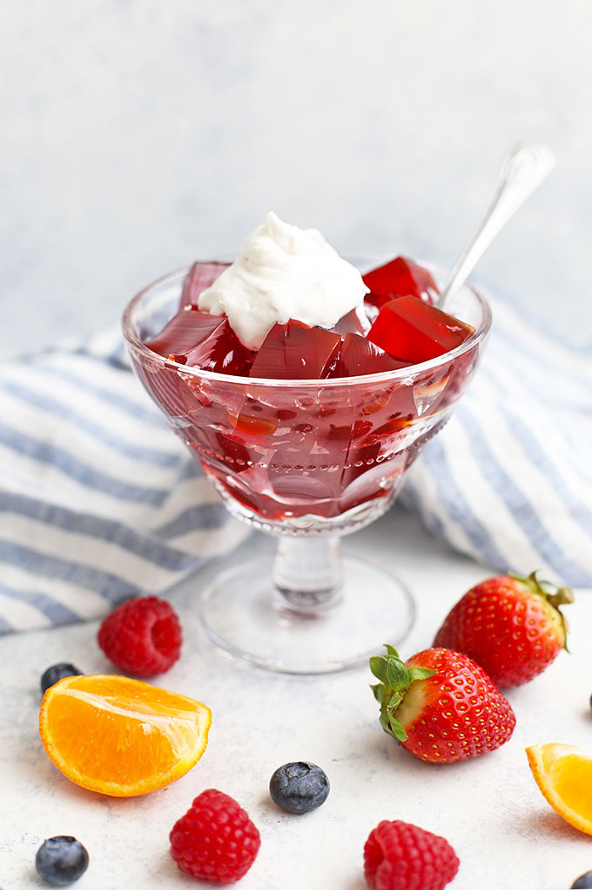

Healthy Homemade Jello

This homemade gelatin recipe is made from natural ingredients, and natural sweeteners, without
any dye or
additives. It's a delicious treat for kids and grown-ups alike! (Dairy free, gluten free & paleo
approved!)
How to Make Healthy Homemade Jello
Ingredients
- 4 cups of juice (See notes )
- 2 Tbsp unflavored beef gelatin
- 2 Tbsp honey or agave (optional)
Instructions
- Add 1/2-3/4 cup of the juice to a bowl or liquid measuring cup and sprinkle with gelatin powder.
- Whisk together to combine and allow to sit for 3-5 minutes to "bloom." The granules will plump and the
mixture will look like very thick applesauce or take on a lumpy appearance.
- Pour the remaining (3 1/4- 3 1/2 cups) juice into a medium saucepan. Heat over medium heat until almost
boiling.
- Remove from heat and stir in honey (if using) and the bloomed gelatin mixture. Stir to dissolve.
- Pour into an 8x8 (2 quart) baking dish for thick Jello or a 9x13" baking dish for thin Jello, or into
individual glasses or jars for individual portions.
- Refrigerate about 4 hours, or until set. (If you've used a 9x13 pan, it may be set in as little as 2 hours)
*You must use unflavored beef gelatin for this recipe, not protein powder, collagen, or gelatin-based protein
powders. ONLY gelatin will work.